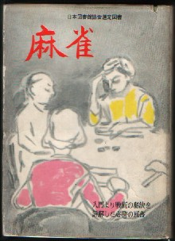

徳田伊楚二の「麻雀（虹有社）」、初版はたしか昭和２５，６年に出版されたと思うが、この本はs37/12出版の29版。単なる入門書であるが、昭和37年になって29版が出されている。いわば長期にわたるベストセラー。
徳田氏は昭和22年10月に「麻雀の秘訣」、昭和25年9月に「最新麻雀入門」を出版している（いずれも虹有社）。当然 戦前のかなりの人と思われるが、詳しいことは知らない。m(_ _)m

なんといってもこの本のエライところは、日本図書館協会の選定図書に指定されていること。この制度はいまもあるかも知れないが、当時 青少年のためになる本ということで多くの本が図書館協会選定図書に指定された。とうぜん囲碁や将棋の本などゲーム関係の本も対象になり、麻雀もそのジャンルに入った。その選定図書に徳田氏の「麻雀」が指定されたというわけだ。
麻雀入門書は数々あれど、図書館協会の選定図書に指定されているのは、この本だけであろう。その意味でエポックメーキングな本。＃σ(-_-)が知らないだけで、ほかにもあったらゴメン。
もちろん選定されるだけあって、内容もしっかりしている。時代が違うから現在のルールとは多少異なるのは仕方がないとしても、著述のありかたはいまでも大いに参考になる。
|